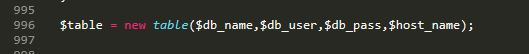

Kullanım Amacı
MYSQL Veritabanı Yönetim Paneli
Bu proje bulutasarim.com adı paylaşılıp kullanıma sunulmuştur. Daha fazla bilgi için lütfen sayfayı ziyaret edin.
Bu proje ile gerek host gerekse local de her türlü küçük sql işlemleri kısa sürede yapabilirsiniz. Hali hazırda kayıtlı bir veritabanı kaydınız varsa bağlantı bilgilerini girerek erişimi sağlayabilir, iki dosyayı (php,js) sayafanıza ekleyerek kurulum dosyasını tamamlarsınız.
Phpmyadmin mysql yöneticisinin mini versiyonudur. Asıl uygulamadan farkı bunu Web sitenizde direk kullanabiliyor olmanız. Tablo yönetimi, Tablo silme ve girdileri düzenleme işlemi yapabilir anlık güncellemeler yapabilirisiniz. Phpmyadmin ile gelen yavaşlık ve karmaşıklığı bu script ile giderebilir, kendi uygulamalarınızı geliştirebilirisiniz.
Script'de bulunan temel özellikler;
- Tablo görüntüleme
- Tablo listeleme
- Tablo silme
- Tablo düzenleme
- Tablo ekleme
- Tabloda yeni sütun ekleme
- Tabloda sütun silme
- Tabloda sütun düzenleme
- Tabloda satırları listeleme
- Tabloda satır ekleme
- Tabloda satırları düzenleme
- Tabloda satır/ları silme
- Veritabanı listeleme (opsiyonel)
- Veritabanı işlemlerini sql olarak açıklama(opsiyonel)
Optiyonel olarak belirtilen alanlar script dışında kullanım amacına göre eklenebilir.
Kullanım yerleri
Script'de Boostrap ve Font Awesome desteği vardır.
Kullanılabilir alanlar;
- Blog
- Fotograf Blog
- Özgeçmiş sayfaları
- Dökümantasyon sayfaları
- Php Geliştirme sayfaları
Geliştirme Süreci
Proje kendi işlerimde oluşturma amacı güdülerek oluşturulmuştur. Temel araştırma Aralık 2018 yılında, çalışabilir bir demosu Ocak 2019 oluşmuştur.
İlk çalışan sürümünde tablo listeleme işlemi ile başlayıp son sürümünde temel özelliklere sahip olmuştur.
Geliştirme ve hata düzeltmeleri github üzerinde sürekli yapılacaktır.
Bu proje şuan kullanımdadır, yani sürekli geliştirme aşamasında.
Kaynaklar;
- https://dev.mysql.com
- https://www.php.net
- https://www.w3schools.com
- https://stackoverflow.com
Dosyalar
Paylaşılar github dosyasında bu scriptin çalışmasında kullanılacak bütün yardımcı dosyalar bulunmaktadır.
Farklı bir sayfada kullanmak istiğiniz takdirde bu iki dosyayı bulundurduğunuza emin olun;
- tabloisle.php
- fonksiyonlar.js
tabloisle.php: Dahil etmek istediğiniz panelinizin php sayfasında kod bölümünün en üst kısma <?php include "tabloisle.php"; ?>
fonksiyonlar.js: Dahil etmek istediğiniz panelinizin php sayfasında kod bölümü <body> olan kısımın en altına footer alanına ekleyiniz.
fonksiyonlar.js: Bu js dosyası güncel Jquery kütüphanesi baz alınarak oluşturmuştur. Lütfen son sürüm bir jquery kütüphanesi kullandığınıza emin olun.
<script type="text/javascript" src="fonksiyonlar.js"></script>
baglan.php: bu scriptin veritabanı seçiminde kolaylık olması için eklenmiş rastgele veritabanı adı bulma dosyasıdır. Şu şekilde eklenir; <?php include "baglan.php"; ?>
tabloisle.php sayfasında session kontrolü ile rastgele bir veritabanı tanımlanmışsa listeleme işlemi yapar.
baglan.php Script dışında kullanım için gerek duyulmaz, benzer bir veritabanı bilgileri girme alanı tabloisle.php dosyasında bulunmaktadır. 15 ile 18. satırlar.
Kurulum
Kurulum ve test esnasında oluşabilecek hata ver sorunlar için lütfen bilgisayarınızın yerel sunucusunu (localhost) kullanınız.
İndirdiğiniz script içerisinde bulunan tabloisle.php ve fonksiyonar.js adlı iki dosyayı kullanmak istediğiniz script klasörünün temel dizinine kopyalayınız.
Kullandığınız kod editörünüzü açarak eklemek istediğiniz php sayfanın üst tarafına tabloisle.php dosyasını include ediniz.
Örnek;
<?php include "tabloisle.php"; ?>
Daha sonra fonksiyonlar.js dosyasını kullanmak istediğniz sayfanın footer bölümüne (js dosyalarının sitenize çağırıldığı nokta) ekleyiniz.
Örnek;
<script type="text/javascript" src="fonksiyonlar.js"></script>
Kullandığınız scriptte Tablo kullanıldığı için Datatable eklentinizin olması görüm açısından fayla olacaktır.
Tablo pluginlerinin Türkçe eklentisi ve ayarları;
<script> $(function () { $('table .table').DataTable({ "language": { "url": "//cdn.datatables.net/plug-ins/9dcbecd42ad/i18n/Turkish.json" }, 'paging' : false, 'lengthChange': false, 'searching' : false, 'ordering' : true, 'info' : false, 'autoWidth' : false }) }) </script>Tablo içerinde kullanılan soru işareti style ayarları;
<style type="text/css"> table { display: block; overflow-x: auto; white-space: nowrap; } .soru-anlam{ display: none; background-color: black; color: white; font-size: 14px; min-height: initial; opacity: .7; outline: 1px solid black; padding: 4px 8px; position: absolute; } .soru-isaret:hover .soru-anlam{ display: block; } tr td input{ max-width: 130px; } tr td select{ max-width: 100px; } </style>Script'te Font Awesome free icon kullanılmaktadır. Dilerseniz indirdiğiniz klasör içerisinden çekebilirsiniz.
Scriptin veritabanı bağlantısını yapmak için tabloisle.php dosyasını kod editörünüzle açın;
baglan.php sayfası tabloisle.php sayfasına include edilmiş şekilde gelmektedir. baglan.php yardımı olmadan kullanmak istiyorsanız baglan.php adlı alanı silerek 15 ile 17. satırlarda bulunan veritabanı bilgilerini kendi bilgilerinizle değiştirin.
Örnek;

baglan.php olmadan veritabanı bağlantısını kullanırsanız kayıtlı bir session verisi olmadığı için 31. satırda bulunan bağlantı gerçekleşecektir.
Sınıfta çalışan ilk fonksiyona (20. satır) gelen parametreler ve değişkenleri tanımlayan baglan.php girdileri 996. satırda bulunmaktadır. 
Tabloları Listeleme
Kayıtlı tabloları listelemek için paneliniz
<body>alanına şu fonksiyonu yazın;<div class="box-body">
<?php if (!isset($_GET["listeletablo"]) AND !isset($_GET["sutun_sayi"]) AND !isset($_GET["tabloduzenle"])) { $table->addtable("index.php"); $table->tables(); } ?></div>
tables() fonksiyonu ile kayıtlı tabloları listemesini yapabilirsiniz.
-
Yeni Tablo Ekleme formunu oluşturmak için addtable() fonksiyonunu kullanıyoruz. Fonksiyon ile gönderilen index.php prametresi formun action kısmı dinamik yol olarak seçer;
$table->addtable("index.php");
Dinamik action yolu yazdığınız adrese asıl tablo ve sütun isimlerinin oluşturulduğu form şablonu eklemek zorundadır. Aksi takdirde yeni tablo oluşturma formu gözükmeyecektir. Örnek scriptte index.php kullanılmıştır.
Tabloyu Oluştur butonuna basıldığında index.php sayfasına yönlendirme yapacaktır method GET olarak ayarlanmıştır.

Tablo ekleme formu ekletablo=Tabloyu+Oluştur get ile devreye girer index.php olarak eklediğimiz action yolunu ve formu göstermek için newtable() fonkisyonunu kullanıyoruz;
<?php if (isset($_GET["ekletablo"])) { $table->newtable($_GET["tablo_ad"],$table->satir()); } ?>newtable() fonksiyonuna iki adet parametre gider. Bunlardan ilki get ile gelen tablo_ad, ikincisi ise form içerisinde sütun satırlarını barındıran satir() fonkisyonudur.
Kayıt edilen veriler, gösterilen veriler ve url kısmında bulunan getleri açıklayan GET okuyucu fonksiyon ile tablo üstünde görüntüleme yapabilirsinz.

Bu alanı sayfanızda bulunan section alanına ya da boostrap hiyerarşisinde boşluk bir alan ekleyebilirisiniz;
<?php $table->get($_GET); ?>Tanımlı GET verilerini olumlu yada olumsuz olarak size gösterir. Form işlemlerinde olumsuz bir sonuçta verileri korumak için geri tuşu bulmaktadır.

Kayıtlı bir tablonu verilerini listelemek için gönderilen listeletablo get değerini tableview() fonksiyonu gösterir. Kullanımı;
<?php if (isset($_GET["listeletablo"])) { $table->tableview($_GET["listeletablo"],$table->insertdata($_GET["listeletablo"])); }Fonksiyon içinde iki parametre bulunur, bunlardan ilki get ile gelen tablo adı, ikincisi ise insertdata() yeni veri ekleme formunu barındıran fonkisyondur. Bu fonksiyon içinde forma gelen get değerine göre form yapısını oluşturur. Oluşturulan form gizli bir div içerisinde saklanır. Veri ekle butonu ile tetiklenen modal içerisine form eklenir ve modal açılır.
Modal;
<div class="modal fade" id="veri-modal" tabindex="-1" role="dialog" aria-labelledby="exampleModalCenterTitle" aria-hidden="true"> <div class="modal-dialog modal-dialog-centered" role="document"> <div class="modal-content"> <div class="modal-header"> <h5 class="modal-title" id="exampleModalCenterTitle">Veri Yükleme Penceresi</h5> <button type="button" class="close" data-dismiss="modal" aria-label="Close"> <span aria-hidden="true">×</span> </button> </div> <div class="modal-body"> ... </div> <div class="modal-footer"> <button type="button" class="btn btn-secondary" data-dismiss="modal">Kapat</button> </div> </div> </div> </div>Bu modal aynı zamanda düzenleme veri düzenleme metodu için kullanılır.
Tablo düzenleme fonksiyonunu çalıştıran kod get ile düzenleme formunu oluşturur, fonksiyon adı edittable() ;
<?php if (isset($_GET["tabloduzenle"])) { $table->edittable($_GET["tabloduzenle"]); }?>Listelenen tablolara yeni sütun eklemek için yeni_satir() fonkisyonunu kullanıyoruz. Bu fonsiyon tablo listesindee bulunan numraları form ile aktive oluyor gelen get değerine göre sütun sayısı forma ekleniyor. Kullanmak için bu kodu yazın;
<?php if (isset($_GET["yeni_satir"])) { $table->yeni_satir($table->satir()); } ?>Burada eklenen satir() fonksiyonu hazır sütun form elementleri eklemek için yapılmıştır.